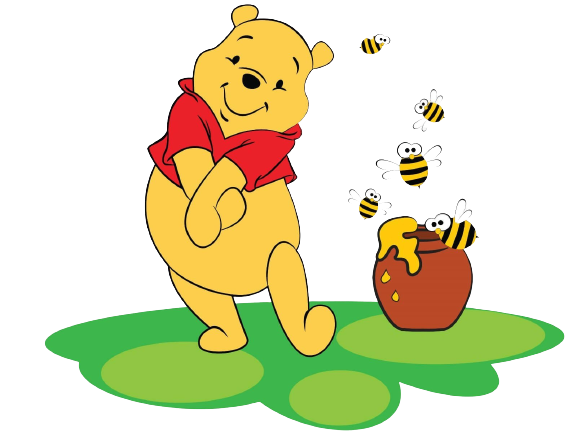

В этом году исполняется 90 лет со дня публикации первой книги о приключениях плюшевого мишки по имени Винни-Пух. Трудно прийти к единому мнению относительно того, когда именно появился на свет знаменитый медведь. Например, если первая книга вышла из печати в октябре 1926 года, то первый рассказ под названием "Неправильные пчелы" был опубликован лондонской газетой "Вечерние новости" на Рождество 1925-го.
Однако 18 января, и в этом никто не сомневается, - день рождения автора книг, Алана Александра Милна. Поклонники знаменитого медвежонка считают именно этот день "днем Винни-Пуха".
